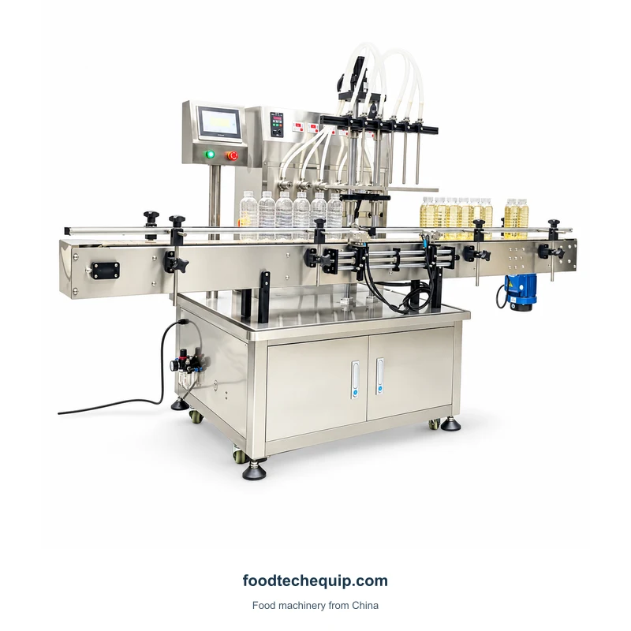

MATERIAL ZUM BEHÄLTER
Flüssige Lebensmittelfüllung
Vergleichen Sie Ausführungen für Flüssigkeiten und Soßen nach Viskosität, Abfülltemperatur, Partikeln und den Maßen der Behälteröffnung.
Entdecken Sie diese Anwendung ↗
Entdecken Sie Abfüllanlagen ↗